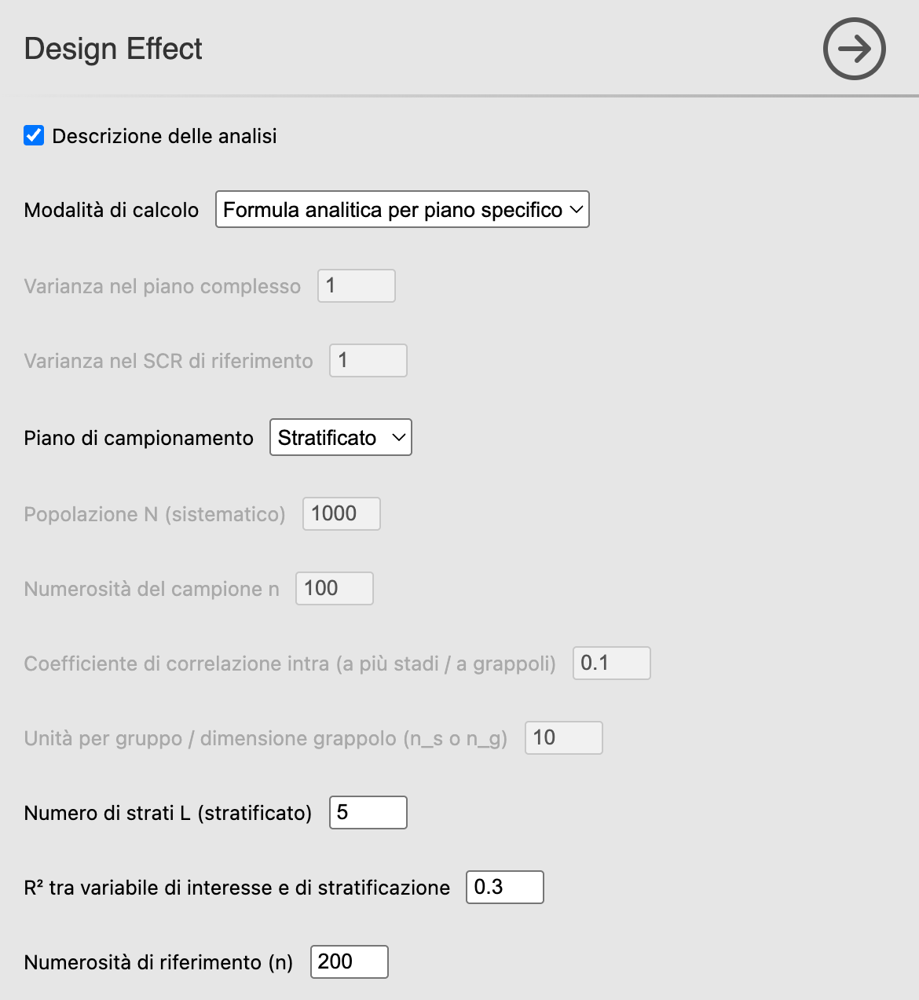
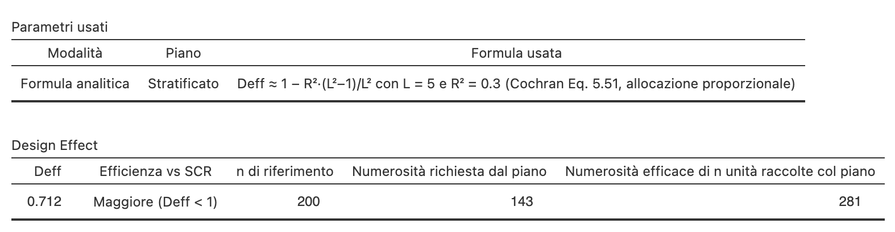

23 Design Effect
Menu: Analisi → AnalisiMercato → Campionamento → Design Effect
Il Design Effect (Deff) quantifica la perdita (o guadagno) di efficienza di un piano complesso rispetto a un casuale semplice di riferimento («rif») di pari numerosità. Quando la frazione di campionamento \(n/N\) non è trascurabile va dichiarato se il riferimento è il campionamento casuale semplice con reinserimento (SCR) o quello senza reinserimento (SSR), perché i due Deff differiscono di un fattore circa \(1 - n/N\) (§ T-02). Nei campi del modulo il riferimento si chiama comunque «SCR», qualunque sia lo schema (per esempio Varianza nel SCR di riferimento).
23.1 Quando usarlo
- A valle del disegno, per stimare in anticipo l’efficienza del piano scelto.
- Per gonfiare \(n\) in fase di programmazione: \(n_{\text{piano}} = \text{Deff} \cdot n_{\text{rif}}\).
- Per dimensionare correttamente l’intervallo di confidenza (IC) di un campione complesso analizzato come se fosse un casuale semplice.
23.2 Il metodo in breve
\[ \text{Deff} = \frac{V_{\text{piano}}(\hat\theta)}{V_{\text{rif}}(\hat\theta)} \]
Il Deff si usa in due direzioni, che il modulo riporta in due colonne distinte, calcolate dallo stesso numero inserito: va letta solo quella che corrisponde al significato di quel numero.
In progettazione, per ottenere all’incirca la precisione di un casuale semplice di \(n_{\text{rif}}\) unità serve
\[ n_{\text{piano}} \approx \text{Deff} \cdot n_{\text{rif}} \]
cioè la numerosità richiesta dal piano.
Su un campione già osservato di \(n\) unità, la numerosità efficace è invece
\[ n_{\text{eff}} \approx \frac{n}{\text{Deff}} \]
Un campione di \(n\) unità con \(\text{Deff} = 2\) porta, sulla varianza dello stimatore considerato, un’informazione paragonabile a circa \(n/2\) osservazioni di un casuale semplice.
23.2.1 Formule e benchmark teorici implementati
| Piano | Deff |
|---|---|
| Sistematico — benchmark sotto trend lineare ideale, solo se \(N = n\,k\) con \(k\) intero | \(\text{Deff}_{\text{SM}} = \dfrac{k+1}{N+1}\) |
| A grappoli | \(\text{Deff}_{\text{GR}} \approx 1 + (\bar B - 1)\rho\) |
| A più stadi | \(\text{Deff}_{2\text{st}} \approx 1 + (b-1)\rho\) |
| Stratificato — benchmark idealizzato | \(\text{Deff}_{\text{ST}} = 1 - R^2\dfrac{L^2-1}{L^2}\) (allocazione proporzionale) |
Nelle formule il pedice indica il piano: SM = sistematico, GR = a grappoli, 2st = a due stadi, ST = stratificato. Le righe del sistematico e dello stratificato non sono formule generali del design effect di quei piani, ma benchmark teorici validi sotto ipotesi precise: un trend lineare perfetto nell’ordinamento del frame il primo, una specifica relazione fra variabile di stratificazione e variabile di interesse con allocazione proporzionale il secondo. Il design effect di un campione reale dipende dalla struttura effettiva del frame, dalle varianze entro strato e dall’allocazione usata.
La formula implementata vale per una popolazione ordinata secondo un trend lineare perfetto (Cochran 1977, sez. 8.6) e per il sistematico classico con \(N = n\,k\) e \(k\) intero; il termine di confronto è il casuale semplice senza reinserimento. Il risultato è molto minore di 1: con \(N = 1\,000\) e \(n = 100\) (\(k = 10\)) si ottiene \(\text{Deff} = 11/1001 \approx 0{,}011\). Non è un errore di calcolo, è il significato della formula. Quando \(N\) non è multiplo di \(n\) il modulo estrae con l’intervallo frazionario (§ P-09), per il quale questo benchmark non è dimostrato: in quel caso la tabella resta vuota e una nota lo dichiara, invece di applicare la stessa formula a un \(k\) con la virgola. Notate che non compare alcun \(\rho\): l’analisi non riceve nemmeno un dataset.
Gli altri due casi non hanno una formula chiusa nel modulo e vanno ragionati a parte:
- ordinamento casuale del frame → \(\text{Deff} \approx 1\) (il sistematico equivale al casuale semplice);
- ordinamento periodico con periodo pari al passo \(k\) → \(\text{Deff}\) può essere molto maggiore di 1 (il campione cade sempre sullo stesso punto del ciclo).
Per un frame reale il valore restituito è soltanto un benchmark teorico, riferito a un ordinamento con trend lineare perfetto: non è una stima del Design Effect effettivo né un suo limite inferiore generale. A seconda della struttura dell’ordinamento, il Deff reale può risultare inferiore o superiore al benchmark. Per esempio, con \(N = 6\), \(n = 3\) e valori \((0, 0, 1, 1, 1, 1)\) i due campioni sistematici possibili hanno la stessa media, 2/3: il Deff è 0, contro un benchmark di 3/7.
\(R^2 = \rho^2(X, Y)\) è il quadrato della correlazione fra la variabile di interesse \(Y\) e la variabile continua \(X\) su cui si costruiscono gli \(L\) strati; il fattore \((L^2-1)/L^2\) presuppone che gli strati siano classi di uguale ampiezza di una \(X\) distribuita in modo approssimativamente uniforme (con altre distribuzioni il guadagno a parità di \(L\) può essere maggiore o minore; con una variabile molto asimmetrica come il reddito, divisa in classi di uguale ampiezza, gran parte delle unità finisce nella prima classe e il guadagno si riduce molto). Più \(X\) è un buon predittore di \(Y\), più alto \(R^2\), più basso il Deff.
È anche il motivo per cui il pannello chiede il numero di strati \(L\): il guadagno ideale \(1 - R^2\) si raggiunge solo al limite \(L \to \infty\). Con \(L = 2\) si ottiene appena \(1 - 0{,}75\,R^2\). Con \(R^2 = 0\) — stratificare su una variabile irrilevante — il Deff vale 1: nessun guadagno rispetto al campionamento casuale semplice, che è la traduzione formale dell’errore comune “stratificare per variabili poco correlate con \(y\)”.
23.3 L’interfaccia

23.3.1 Modalità “Da due varianze”
| Opzione | Default | Note |
|---|---|---|
| Varianza nel piano complesso | 1 | Stima empirica o teorica |
| Varianza nel SCR di riferimento | 1 |
Deff = \(V_{\text{piano}} / V_{\text{rif}}\).
23.3.2 Modalità “Formula analitica per piano specifico”
| Opzione | Default | Note |
|---|---|---|
| Piano di campionamento | Sistematico | Sistematico / A più stadi / A grappoli / Stratificato |
| Popolazione N (sistematico) | 1 000 | |
| Numerosità n | 100 | |
| Coefficiente \(\rho\) | 0,1 | Per a più stadi / grappoli |
| Unità per gruppo / dimensione grappolo (\(n_s\) o \(n_g\)) | 10 | \(b\) nel multistadio, \(\bar B\) nei grappoli: qui \(n_g\) è la dimensione del grappolo, non il numero di grappoli estratti di § P-11 |
| Numero di strati L | 4 | Per stratificato |
| \(R^2\) | 0,3 | Per stratificato |
| Numerosità di riferimento (n) | 100 | Un solo numero \(n\), letto in due modi. Se è la numerosità del casuale semplice da eguagliare, vale la colonna Numerosità richiesta dal piano, \(\text{Deff} \cdot n\). Se è il campione già raccolto col piano complesso, vale la colonna Numerosità efficace, \(n/\text{Deff}\). Con Deff = 2 e \(n\) = 200: per eguagliare un casuale semplice di 200 unità ne servono 400, mentre 200 unità già raccolte col piano valgono quanto 100 di un casuale semplice |
23.4 Esempio pratico
Caso 1 — A grappoli con 10 punti vendita (PV). Dal § P-11: \(\bar B \approx 83\) e un \(\rho\) ipotizzato pari a 0,05 (valore illustrativo, non stimato sul dataset didattico).
- Piano = A grappoli; \(\rho\) = 0,05; Unità per gruppo / dimensione grappolo = 83 (è \(\bar B\), non i 10 grappoli estratti del § P-11).
- Deff = 1 + 82 · 0,05 = 5,1.
- Per ottenere la precisione di un casuale semplice di \(n_{\text{rif}}\) = 200, servono \(n = 5{,}1 \cdot 200 = 1\,020\) unità.
Caso 2 — Stratificato per classi di una variabile continua (classi di uguale ampiezza e variabile distribuita in modo approssimativamente uniforme, come presuppone la formula). Se \(R^2\) = 0,30 e si usano \(L\) = 5 classi:
- Piano = Stratificato; \(L\) = 5; \(R^2\) = 0,30.
- Deff = 1 − 0,30 · (25−1)/25 = 0,712.
- Per pari precisione di un casuale semplice con \(n = 200\) bastano \(n = 143\) unità (il modulo arrotonda per eccesso 142,4): il piano risparmia 57 interviste su 200, il 28,5% (28,8% prima dell’arrotondamento, cioè \(1 - \text{Deff}\)).
Il risparmio è di poco inferiore al 30% suggerito dalla formula ideale \(1 - R^2\): con soli 5 strati non si cattura tutta la correlazione fra variabile di stratificazione e variabile di interesse. Provate a rifare il calcolo con \(L\) = 10 e con \(L\) = 2 per vedere quanto pesa questa scelta.

23.5 Casi limite
| Deff | Interpretazione | Esempio |
|---|---|---|
| < 1 | Piano efficiente | Stratificato ben fatto |
| = 1 | Equivalente al casuale semplice | \(\rho = 0\), \(R^2 = 0\) |
| 2–5 | Costo accettabile | Grappoli con \(\rho\) moderato |
| > 5 | Perdita pesante | Grappoli grandi con \(\rho\) alto |
23.6 Errori comuni
- ❌ Calcolare Deff sui dati senza tenere conto della struttura del piano: si ottiene 1 per costruzione se si applicano ovunque le formule del casuale semplice.
- ❌ \(\rho\) fuori dai limiti ammissibili: il coefficiente di correlazione intraclasse (ICC, intraclass correlation coefficient) non può assumere qualunque valore in \([-1, 1]\). Nella formula approssimata \(\text{Deff} \approx 1 + (\bar B - 1)\rho\), con grappoli di \(\bar B\) unità (\(b\) unità per unità primaria di campionamento, o PSU, nel multistadio), il modulo accetta solo \(\rho > -1/(\bar B-1)\): al limite il Deff sarebbe zero, sotto diventerebbe negativo, cioè una varianza negativa. Il modulo rifiuta il calcolo indicando il limite (con \(\bar B = 10\), per esempio, \(\rho\) deve restare sopra \(-0{,}111\)). Il limite coincide con quello teorico dell’ICC per grappoli di uguale dimensione; con grappoli di dimensioni diverse non è un vincolo universale e non si ricava semplicemente dalla dimensione media. Un \(\rho\) negativo entro i limiti è invece legittimo — grappoli deliberatamente eterogenei — ma raro nei contesti reali: prima di usarlo, verificate che non sia un artefatto di stima.
- ❌ Deff pari a 0: indicherebbe una varianza nulla dello stimatore nel piano considerato. La numerosità efficace \(n/\text{Deff}\) non sarebbe definita: al tendere del Deff a zero cresce senza limite. Il modulo rifiuta questo caso e interrompe il calcolo. Attenzione in modalità Da due varianze, dove il campo accetta lo zero ma il calcolo si ferma.
- ❌ Ignorare il Deff in fase di IC: analizzare un campione complesso come se fosse casuale semplice dà una stima sbagliata dell’errore standard — lo sottostima quando \(\text{Deff} > 1\), lo sovrastima quando \(\text{Deff} < 1\).
23.7 Workflow
- Disegnare il piano.
- Calcolare \(n_{\text{rif}}\) con Numerosità campionaria.
- Stimare il Deff con questo capitolo.
- Gonfiare \(n\): \(n_{\text{piano}} = \text{Deff} \cdot n_{\text{rif}}\).
- Procedere all’estrazione.